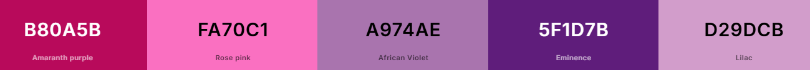
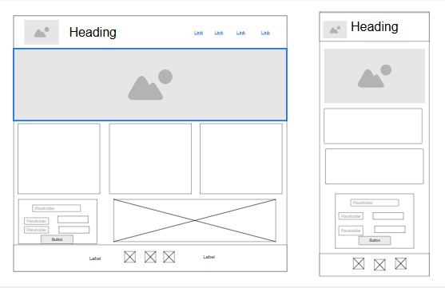

Site Name
The name of the website is Canta Callao Young Women's family.
This name represent to all the young women of Canta Callao ward. I added the word family, so they can remember that we all are a family.
Site Purpose
This site provides a espace to share the activities, suggestions, and good messages to improve young women espiritual progress. In this website they will have all the information about the group and will also display photos and advances in their progress.
Scenarios
Could I receive some ideas to improve my scripture reading?
Can I ask questions and give my suggestion for futures activities?
When is the next activity in the stake o in the ward?
Color Schema
Background: #B80A5B - #D29DCB
Headings: #FA70C1 - #5F1D7B
Paragraph: #A974AE
Typography
Playwrite Australia QLD: For Headings and titles
Ubuntu: Paragraphs and text.
Wireframe
Mobile view and Larger View
